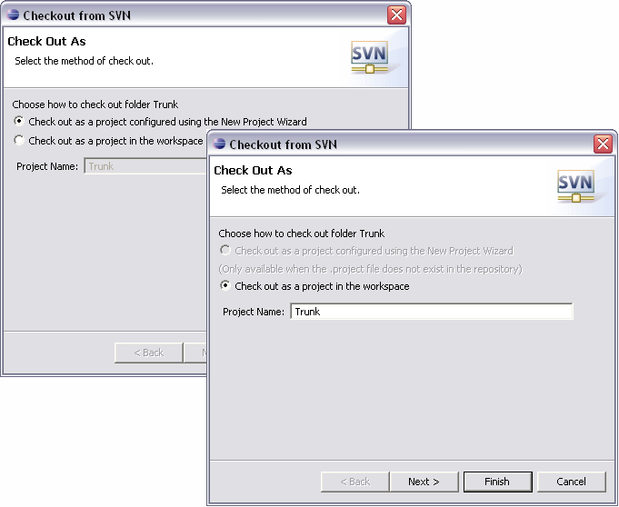

Check out is the term used to describe the process of making a copy of a project from a repository into your local workspace. In SVN, the check out process creates a working copy. A working copy is a specially formatted folder structure which contains additional .svn folders that store SVN information, as well as a pristine copy of each item that is checked out.
To checkout directly against your repository, navigate to the SVN Repository Exploring Perspective. If you have not yet defined a connection to your repository, you will need to add a new repository location.
Select the desired repository directory and choose from the context menu.

If an Eclipse .project file already exists in the selected repository folder, the check out wizard will automatically default the method of checkout and using the project definition file. If no .project file exists in the selected repository location, the wizard will give you the option of checking out the folder as a regular Eclipse project or launching the New Project Wizard.

The next step allows you to identify where the working copy should be created. The default option is to create the working copy in your Eclispe workspace. To select an alternative location, uncheck the use default workspace location option and type or Browse for a new target location.
Related Tasks
None
Related Reference
SVN Repository Exploring Perspective
Creating a Repository Location